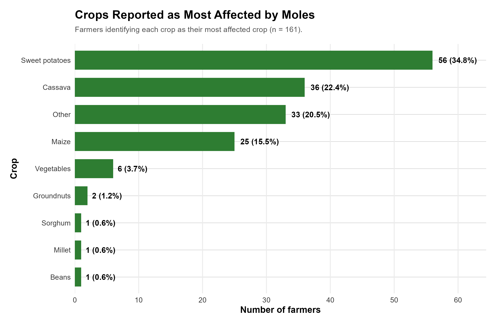

Bulimbo Mole Baseline Dashboard
Farmer Research Network – Baseline Analysis
Analysis of mole infestation, severity, crop damage, farmer practices and support needs.
Kobo-labelled Excel export • 161 farmers • 99 variablesDashboard Filters
Executive Summary
- Widespread infestation: 149 farmers (92.5%) reported current signs of mole infestation.
- Field evidence: Active mole burrows or signs were observed on 134 farms (83.2%).
- Substantial severity: 137 farmers (85.1%) reported infestation scores of 3–5.
- Crop-loss concern: 59 farmers (36.6%) reported high or very high crop loss.
- Existing experimentation: 55 farmers (34.2%) had previously attempted to control moles.
- Training gap: Only 9 farmers (5.6%) reported receiving mole identification/control training.
- Support demand: 155 farmers (96.3%) indicated that training on mole identification and control would help them manage infestation better.
Key Indicators
| Indicator | N | Total | Percent |
|---|---|---|---|
| Current signs of mole infestation | 149 | 161 | 92.5% |
| Active mole burrows/signs observed | 134 | 161 | 83.2% |
| Previously tried mole control | 55 | 161 | 34.2% |
| Received mole training | 9 | 161 | 5.6% |
| Moderate/severe/very severe infestation | 137 | 161 | 85.1% |
| High/very high crop loss | 59 | 161 | 36.6% |
Farmer Profile
Age Summary
| Statistic | Value |
|---|---|
| Farmers | 161 |
| Mean age | 47.7 years |
| Median age | 47 years |
| Minimum age | 23 years |
| Maximum age | 80 years |
Gender Distribution
| Gender | N | % |
|---|---|---|
| Female | 93 | 57.8% |
| Male | 68 | 42.2% |
Mole Infestation and Severity
Current Infestation Severity

Severity Distribution
| Severity | N | % |
|---|---|---|
| 2 – Low | 12 | 7.5% |
| 3 – Moderate | 73 | 45.3% |
| 4 – Severe | 60 | 37.3% |
| 5 – Very severe | 4 | 2.5% |
| Missing / NA | 12 | 7.5% |
Mole Activity and Field Evidence
Frequency of Mole Activity

Observed Signs
| Sign | N | % |
|---|---|---|
| Mole mounds / heaps of soil | 113 | 70.2% |
| Underground tunnels / ridges | 96 | 59.6% |
| Damaged roots | 60 | 37.3% |
| Wilting / dying plants | 60 | 37.3% |
| Plants uprooted / missing | 22 | 13.7% |
| Gnawed / damaged crops | 11 | 6.8% |
Crops and Crop Damage
Most Affected Crop

Reported Crop Loss

Types of Damage Reported
| Damage indicator | N | % |
|---|---|---|
| Plants damaged or uprooted | 101 | 62.7% |
| Roots / tubers damaged | 94 | 58.4% |
| Tunnels / mounds interfering with field | 38 | 23.6% |
| Reduced crop yield | 23 | 14.3% |
| Seedlings destroyed | 8 | 5.0% |
Farmer Control Practices
Mole-Control Methods

Reported Effectiveness
| Effectiveness | N | % |
|---|---|---|
| Effective | 17 | 10.6% |
| Not effective | 12 | 7.5% |
| Not sure | 1 | 0.6% |
| Partly effective | 23 | 14.3% |
| Very effective | 2 | 1.2% |
| NA | 106 | 65.8% |
Training and Support Needs
Previous Training

Support Requested
| Support | N | % |
|---|---|---|
| Training on mole identification and control | 155 | 96.3% |
| Access to affordable traps | 90 | 55.9% |
| Practical demonstrations | 84 | 52.2% |
| Follow-up technical support | 62 | 38.5% |
| Participation in on-farm trials | 62 | 38.5% |
| Information / extension materials | 38 | 23.6% |
Village-Level Infestation
Use the village filter above to focus on individual locations. Village percentages should always be interpreted alongside the number of farmers surveyed.

| Village | Farmers | Moderate–Very Severe | Percent |
|---|---|---|---|
| Panyako | 9 | 7 | 77.8% |
| Mukhweya C | 8 | 8 | 100.0% |
| MukhweyaC | 8 | 8 | 100.0% |
| Shibanze | 8 | 8 | 100.0% |
| Khabukoshe | 7 | 7 | 100.0% |
| MukhweyaB | 6 | 6 | 100.0% |
| Mukhweya | 6 | 5 | 83.3% |
| Eshibanze | 5 | 4 | 80.0% |
| Khabimbi | 5 | 4 | 80.0% |
| Lukusi town | 5 | 3 | 60.0% |
| Namasanda | 13 | 10 | 76.9% |
| Shiyabo | 17 | 14 | 82.4% |
| Bulimbo A | 4 | 3 | 75.0% |
| Ebusishe | 6 | 4 | 66.7% |
| Bukananachi B | 3 | 2 | 66.7% |
| Habukoshe | 2 | 1 | 50.0% |
| Mukweya B | 2 | 1 | 50.0% |
| Namasanda B | 2 | 1 | 50.0% |
| Makadara | 1 | 0 | 0.0% |
| Mundubi | 1 | 0 | 0.0% |
| Weyaba | 1 | 0 | 0.0% |
Statistical Tests
| Test | Variables | Statistic | p-value | Interpretation |
|---|---|---|---|---|
| Chi-square | Gender vs current mole infestation | 0.1192 | 0.7299 | No statistically detectable association |
| Chi-square | Gender vs infestation score 3–5 | 0.1584 | 0.6907 | No statistically detectable association |
Data Quality
The automated check identified variables with substantial missingness and variables that were completely blank.
Completely blank variables: if_other_specify_74, how_many_of_your_fields_are_currently_affected_by_moles, have_you_experienced_mole_infestation_on_your_farm_before, for_approximately_how_many_years_have_you_experienced_mole_infestation, compared_with_previous_seasons_how_has_mole_infestation_changed, when_is_mole_infestation_usually_most_serious, validation_status.
Review the data-quality workbook before using the findings for formal reporting. In particular, distinguish true “No” responses from questions skipped because of Kobo relevance or skip logic.
Programme Interpretation
This dashboard supports the Bulimbo Farmer Research Network by providing a baseline reference for the extent and distribution of mole infestation, severity, crop damage, farmer practices and support needs.
The findings can guide the next stage of farmer-led experimentation and monitoring. Future monitoring should retain the core indicators of infestation, severity, crop damage, control practices and observed outcomes so that changes can be assessed consistently over time.